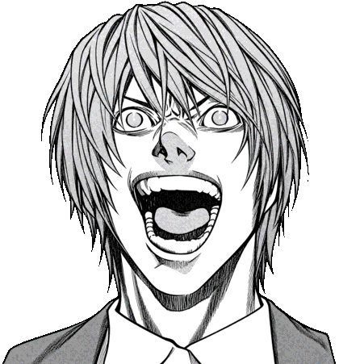

は
は
は
は
は
は

読み込んでいます…
※これはAIによるロイヤリティフリー画像のはずです
TA
X
I NOTE
≡
近日、誰か１メーターを引けばキラが決まります
—
ボタン位置
右利き
左利き
管理
ログアウト
▼
フィードバック
記録
入れる・直す
狙い目
いま行く所
表グラフ
時間×乗り場
横棒グラフ
夜の流れ
折線グラフ
時刻×金額
パーセント
ロング率
バラシ
会場×時間
関空
ホテル×時間
イベント
今日・明日
お知らせ
使い方
過去の記録
すべてに戻す
全員
自分だけ
—
合計
¥0
—
記録の数
0
1日当たり
¥0
1本の平均金額
—
アツい時間帯
—
—
粛清
きろく
完了